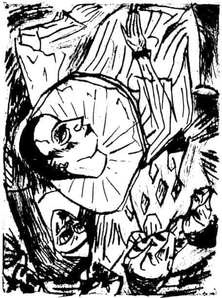
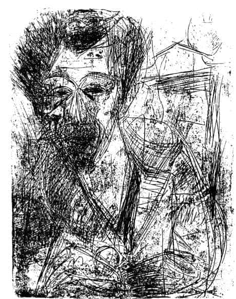
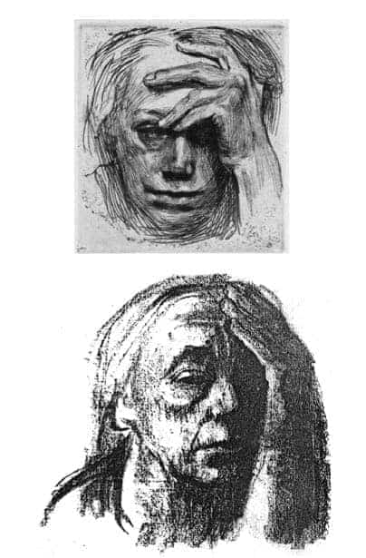
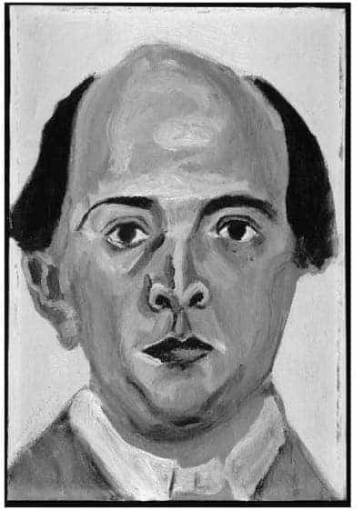
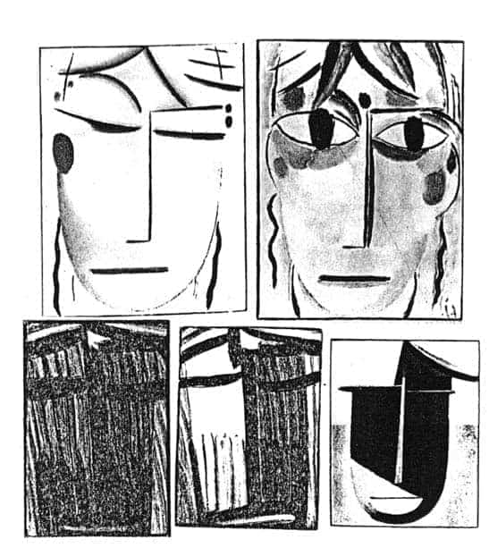

7.3.
Piyero tipi, özellikle ekspresyonist sanatkârlar arasında büyük ilgi görmüştür. Ekspresyonistler, Piyero tipi üzerinden modernizmin ürettiği yeni insanın özelliklerini irdelemişlerdir. Yeni insanın özelliklerinin belirlenmesinde İsa’nın yaşamöyküsünün yeniden yorumlanışı, Darwin’in evrim kuramı, Marx’ın ekonomi politiği ve diyalektik materyalist tarih anlayışı, Freud’un psikanaliz yöntemi ile Einstein’ın rölativite kuramı ve çekirdek fiziğindeki değişmelerin katkısı büyük olmuştur. Fakat ekspresyonist sanatkârlar üzerine asıl, Nietzsche’nin felsefesinin ve tanrının öldüğünü açıklamasının etkisi belirleyici niteliktedir... Ancak vurgulamak gerekir, Nietzsche (bile) modern dünyayı kendine özgün söylemiyle, hem olabildiğince yadsımış/inkâr etmiş hem de gelişmelere –kısmen de olsa– umutla bakmış, hatta ütopi boyutunda beklentileri olmuştur. Nietzsche, modernleşme sürecinde yaşanan kültürel sığlığın, kabalıkların kriz dönemlerine özgün geçici hastalıklar olabileceğini, bunların, felsefenin, mitolojinin, sanatın, müziğin yardımıyla aşılabileceğini umut etmiştir.24 Nietzsche, “kuşkulu bir mümin ve tanrı arayan günahkâr” tavrı ve estetize edilmiş aklın yardımıyla, yeni insanların ortaya çıkabileceğini beklemiş. Burada özellikle –hiç olmazsa yaşamının ilk yarısında– Wagner’in müziğine çok güvenmiştir... Ancak sonraki yıllarda, Naziler döneminde, özellikle Wagner’in müziği gerçekten de çok benimsenmiş; çok çalınmıştır. Hatta bu arada Nazi yöneticilerinin pek çoğunun çok iyi müzik eğitimi görmüş kişiler olduğu görülmüştür... Ama sonuçta ortaya estetize değil, militarize edilmiş toplumlar ve insanlar çıkmıştır. Bu beklenmeyen paradoks (akıl dışılık, irrasyonalizm) pek çok kişiyi ama özellikle de aydınları, sanatkârları şaşkına çevirmiştir.
Ekspresyonist sanatkârlar, toplumsal değişimi en arı biçimlerde tespit edebilmek için, bilebilecekleri en yalın ve dolaysız bilgi/duygu kaynağı olan özbenliğin aynası konumundaki kendi yüzlerini resimlemeye başlamışlar, toplumsal değişimin kendi ruhlarındaki izlerini, gene kendi yüzlerinde ve de özellikle de gözlerinde yakalamanın peşine düşmüşlerdir.
Ekspresyonist sanatkârların kendi kendilerini resimlemelerinde insanın geleneksel toplumlardan kopuşu, yeni modern kent yaşamında, yeni iş-bölümleri içinde her bir şeyin görece (rölatif) olduğu, eskinin inanılan tüm “hakikatlerin ve gerçeklerin tırnak içine alındığı” bir dünyada, insanın tinsel/ruhsal/biyolojik çözülüşü, varoluş korkusu ve güvensizliği gösterilmeye çalışılmıştır. Hızlı kentleşmeler içinde dünya, insanlar için, eski anayurt olmaktan çıkmış. Norm sistemleri değişmiş. Bu koşullarda, insanların ruhlarında ve yüzlerinde oluşan yeni ifadelerde de yaşanan bu olağanüstü dağılmayı, kuşkuyu, umutsuzluğu, güvensizliği anlatan sert ve kesik çizgiler (fragmental) belirmiştir.
Burada artık klasik portre anlayışında olduğu gibi kişinin toplumsal konumu, göksel ve yersel ilişkilerinin irdelenmesi söz konusu olmamış. Geleneksel anlayışın tersine, politik psikolojik bir tutumla, toplumsal kurumların, teknolojinin, modernizmin, kentleşmelerin insanların özbenliklerine olan etkileri gösterilmeye çalışılmış.25
Kuşkusuz burada fotoğraf makinesinin, 1839 yılından beri genel ve 1851 yılından beri de psikiyatri kliniklerinde özel olarak “delilerin” yüz ifadelerini tespit etmek için kullanılmaya başlanmasının önemli etkileri olmuştur.26
Bu değişim koşullarında, ekspresyonistlerin büyük bir dürüstlük ve içtenlikle kendi kendilerini –çılgınlıklarını– resimlemelerinin getirdiği çok boyutlu bilgilerin, kültür ve ruhbilim tarihine katkısı büyük olmuştur.
Bu yeni insanın resimlerinde eskinin anlamlı yüz ifadeleri artık yoktur. Çünkü, insanın artık anlamı kalmamıştır. Bireysel özellikler yitirilmiş, insanda –ancak– şeyleşmelerden arta kalanlar tespit edilmiştir. Bu resimlerde görülen insan sanatkârın kendisi değil, arta kalanı, benzeri ya da ileride olacak olanın ilk desen denemesidir...27
Resimlerde sıklıkla “kriz” durumu işlenmiş. Burada, kişilik ile dış dünya arasındaki sınırların belirsizleştiği özellikle gösterilmek istenmiş. Benliğin, yeni kişiliğin bu kriz ortamında, dış dünya ile arasındaki sınırların silindiği, özbenliğin boyutlarının –ancak– aşağı yukarı kestirilebileceği vurgulanmaya çalışılmıştır. Kişiliğin dayanacağı hemen hemen hiçbir sağlam dayanak noktasının kalmadığı modern dünyanın getirdiği güvensizlik kerelerce anlatılmış. Benliğin geçirdiği şaşkınlık, dağılma korkusu, olup bitenleri algılama ve anlama zorluğu, yabancılaşma resimlenmiş. Yaşam alanlarının tehdit altında kaldığı, insanların salt psişik değil, biyolojik olarak da dağılma sürecine girdiği, mekânsız, zamansız, tarihsiz, kültürsüz, dayanaksız kalmanın getirdiği dezoryantasyon ve depersonalizasyon, korku, atomlaşma, yalıtlanma, geri çekilme süreci anlatılmıştır.28
Ekspresyonistlerin yapıtlarında insanın benliği –eskinin– görece de olsa denge durumunu yitirmiş; sürekli kriz içinde yaşamaktan yorgun düşmüş; toplumsal politik boşluk, hızlı bir ruhsuzlaşmayı koşullamıştır... Burada artık, ne bedeni ve ne de ruhu koruyacak güvenceli bir barınak kalmış; aşkın bir yurtsuzluk ve bu yaşananlara karşı kökten bir inkâr/tepki olarak yoğun bir hüzün ortaya çıkmıştır.
Ekspresyonist sanatkârlar arasında Ernst Ludwig Kirchner’in (1880-1938), tartışmasız özel bir yeri vardır. Kirchner, salt bu sanat akımının en çarpıcı örneklerini vermekle kalmamış, ayrıca modernizmin etkisinde dünyanın çözülme sürecinin hızlandığının sanıldığı bir dönemde, 7 Haziran 1905 tarihinde, Erich Heckel (1883-1970), Karl Schmidt Rottluft (1884-1976), Fritz Bleyl ile birlikte Dresden’de metafor bir adla Köprü (Die Brücke) hareketinin kuruluşunu ve gene aynı adı taşıyan yayın organının çıkarılmasını başlatmıştır. Köprü hareketi hızla yaygınlaşmış. Pek çok yeni katılımlarla kısa zamanda uluslararası boyutlara ulaşmıştır. Bu romantik arkadaş hareketinin hiçbir programı olmamış. Schmidt-Rottluft’un tanımıyla, “İnsanca ilişkiler kurmak, sözde kişiliklerden, yapmacık ilişkilerden öteye bir şeyler oluşturmak istenmiş; ama bunu anlatacak ne sözcük, ne renk ve ne de bir çizgi bulunmuştur...”29
Kirchner’in son derece duyarlı melankolik kişiliği bu hareketin içinde bulunduğu genel toplumsal ve birey tinsel/ruhsal durumları simgeler nitelikte olmuştur. Birinci Dünya Savaşı’nın başlangıç belirtileri çoğaldıkça, Köprü hareketini oluşturan sanatkârların ruhsal gerilimleri artmış. Kirchner’in melankolik hüznü, savaşın başlangıcında giderek yoğunlaşmış. Kendi söylemiyle, “zorla gönüllü askere alınması” Kirchner’in ruhsal gerginliğini psikotik kriz niteliğine dönüştürmüştür. Kirchner psikoz nedeniyle askerlikten uzaklaştırılmış. İsviçre’de klinik tedavi görmüş. Yeniden askere alınma korkusuyla, kuşkuları hezeyan niteliğine dönüşmüş. Psikiyatri kliniğinde yatarken açlık grevi yaparak intihar girişiminde bulunmuş... Uzun süre yemek yememiş. Bu ara kısmi felç geçirmiş... Hekimlerin, bu tür bir bedensel ve ruhsal durumla yeniden askere alınmasının olanaksız olduğu güvencesi vermelerinden sonra açlık grevine son vermiş. Ancak Kirchner’in sağlığına kavuşması uzun yıllar almıştır.30
Kirchner, Birinci Dünya Savaşı öncesi, süresi ve sonrası dönemlerde, modern yaşamın getirdiği ruhsal krizleri tüm açıklığıyla betimleyebilmek, dışa vurabilmek için resimlerinde ruhbilimsel tespitleri ön plana çıkarmış. Renkler, çizgiler modern büyük kent insanlarının ikiyüzlü, huzursuz, tahrip olmuş ruhsal yanları son derece uyarıcı biçimlerde sergilenmiştir.31
Kirchner bir anlamda Van Gogh’un salt sanat yöntemini değil, ruhsal dünyasını ve bu dünyada diğer insanlar ile birlikte olamamanın, toplumsallaşamamanın yazgısını da paylaşmıştır. Kirchner de Van Gogh gibi pek çok ayçiçeği resmi yapmış. Ancak Van Gogh ile Kirchner’in ayçiçeklerinin karşılaştırılması bile dünyanın 20-30 yıl içinde nereden nereye gittiğini ve bu gidişin insanların ruhsal dünyalarını nasıl etkilediğini göstermiştir.
Kirchner, özellikle kendi kendini resimlemelerinde, “kendini tanı” çabası içinde kişiliğinin biyografisini araştırırken, kendisini artık bir bütün olarak değil, kesik kesik çizgilerden, fragmanlardan oluşan bir teknik kullanarak yüzeyselleştirmeye, dağıtmaya ve “şimdiki ve buradaki benliğini” daha belirgin göstermeye çalışmıştır.
Kirchner, sonraki yıllarda yazdığı günlüklerinde ve anılarında, kendisini hep yurtsuz duyumsadığını, çalışmalarında yalnızlığın özlemini dile getirdiğini vurgulamış... “Ben hep yalnızdım. Kuşkusuz kalabalıklar içinde yaşadım ama hep yalnız kaldım... Hep hüzünlüydüm...” diye yazmıştır.32

Erich Heckel, Pierrot’nun Ölümü, 1913, (15,4 x 11,4 cm.) Folkwang Müzesi, Essen.

Ernst Ludwig Kirchner, Kendi Resmi, 1916, (40,4 x 30,8 cm.) Saarland Müzesi
“Savaşın vahşetini, içindeki huzursuzluğu, bilincinin titreşimini kendi resminde yansıtmaya çalışmıştır.”
Kirchner, büyük bir kültür hareketini başlatan bir sanatkâr olmasına karşın, kendisini hep terk edilmiş, yalnız bırakılmış bir insan olarak duyumsamıştır. Yakın arkadaşı Karl Schefller, daha 1920 yılında Kirchner için, “O hep yalnızlığı arıyordu... Dahası o buna dayanabiliyordu. Yalnızlık, Kirchner’i yaratabiliyordu” diye yazmıştır.33
Kirchner’in 1915 yılında çok bozulan sağlık durumu 1918 yılında bile yeterince düzelmemiş. Fakat Kirchner (de) Albrecht Dürer ve Van Gogh geleneğini sürdürmüş, yaşadığı melankolik ruhsal dünyasını sıklıkla resimlemiştir. Örneğin, 1917 yılında Hasta ve Hastanın Başı, 1918 yılında Dans Eden Ölü resimlerini yapmıştır.
Klinikten çıktıktan sonra Almanya’ya dönmemiş. İsviçre’de Davos yakınlarında bir küçük köyde, büyük kent yaşamından uzak, komşu köylülerle birlikte, görece dingin bir yaşam sürdürmüş. Pek çok yapıt üretmiş. Arkadaşlarının, galericilerin ve yayınevlerinin ısrarına karşın büyük kent yaşamından ve büyük kent insanlarından uzak durmaya çalışmıştır.
Nazilerin Almanya’da yönetime gelmeleriyle Kirchner’in ruhsal dünyası yeniden gerginleşmiş. Nazilerin, en başta kendisininkiler olmak üzere pek çok sanatkârın yapıtlarını “soysuz sanat” (Entartete Kunst) ilan etmelerini ve ardından da Almanya’nın Avusturya’yı işgal (Anschluss) etmesini duyduktan sonra Kirchner, bu dünyada yaşamını sürdürmesinin hiçbir anlamı kalmadığına karar vermiş, 15 Haziran 1938 tarihinde intihar etmiştir.
Naziler, ölümünden hemen sonra Kirchner’in bin kadar yapıtını, çeşitli kentlerde düzenledikleri “soysuz sanattan kurtulma törenlerinde” parçalamışlar, yakmışlardır.
Diğer pek çok ekspresyonist sanatçı (da), bilinebilecek en arı ve temel bilginin insanın kendi özbenliği üzerine olan bilgi olduğundan hareketle, “gerçeği” ya da “hakikati” gene kendi yüzlerinde ve gözlerinde yakalamaya çalışmışlardır.
Otto Dix (1891-1969), kendisini Asker olarak (1914) ya da Savaş Tanrısı Mars (1915) biçiminde resimlemiş, savaşın kendisini nasıl parçaladığını sergilemek istemiştir.
Max Beckmann (1884-1950), kendisini en içtenlikle resimleyen sanatkârlardan biri olarak kültür tarihine geçmiştir, savaş sırasında ağır ruhsal bunalımlar, korku krizleri geçirmiş. Yapıtlarının büyük bir bölümünde yaşamın anlamsızlığını yansıtmaya çalışmıştır.
Käthe Kollwitz (1867-1945), kendisini yoğun bir yalnızlık, umutsuzluk, çaresizlik içinde, Dürer’in Melencholie I gravüründeki melankolik kadının konumuna benzer biçimlerde resimlemiştir.
Erich Heckel (1883-1970), kendisini varoluşun anlamsızlığı, hiçliği, boşluğu içinde yoğun bir yalnızlık, terk edilmişlik, çaresizlik içinde sergilemiştir.
Egon Schiele (1890-1918), yaşadığı yoğun tinsel/ruhsal acıyı ve orgazmı salt yüzünün mimiklerinde değil, çıplak vücudunun kas liflerinde bile sergileme becerisini göstermiştir...
Büyük bir kuşku, umutsuzluk, yalnızlık içinde yaşayan sanatkârlar, sürekli olarak kendi kendilerini yeniden bulmaya, yeniden yaratmaya çalışmışlardır. Kısacık yaşamına karşın bu dönemin en önde gelen kadın ressamı Paula Medornsohn Becker (1876-1907), 31 yaşında ölene değin, bilinen 30 kadar resim yapmış. Bunlardan 20 tanesinin kendi kendisini arayan resimler olduğu görülmüştür.(34, 35, 36, 37) Paul Klee, bu son derece öğretici durumu, “İnsanın benliğini canlandırma, göz önünde bulundurma çabası,” olarak tanımlamıştır. Aynı korkulu melankolik çaba, Edward Munch (1863-1940) ve özellikle de Arnold Schönberg’de gözlenmiştir.
Arnold Schönberg (1874-1951), salt müziği ortalama dinleyicinin beğeni düzeyinden kurtarıp özgürleştirmesiyle değil, tam da modern bir aydına yakışır olağanüstü dürüstlük ve içtenlikle, kendi kendisini resimlemeleriyle de dünya kültür tarihinde kendine özgün bir kişilik sergilemiştir. Schönberg kerelerce kendisinin son derece amatör bir ressam olduğunu söylemesine karşın –belki biraz da, yakın dostları Kandinsky ve Kokoschka’nın da desteğiyle– özellikle 1908-1910 yılları arasında yaşadığı ruhsal bunalım, kriz dönemlerini sürekli resimlemiş. Kendisinin tanımıyla, benliğinin bitişini, çözülüşünü tespit etmeye çalışmıştır. Schönberg, Viyana Okulu’nun –psikanalizin– etkisi altında, bilincinin etkisinden kaçmış iç-dünyasını, özbenliğini yakalamak, bir anlamda yüzünün içyüzünü, ruhunu görmek istemiş. Kendi vurgusuyla, “yaşanan trajediyi anlatmaya salt müziğin yetmediğini, kendisinin bunu besteleyemediğini duyumsadığı” zamanlarda, kendi kendisini gene kendi bakışlarından yakalamaya, resimlemeye çalışmıştır.38
Arnold Schönberg’in kendi kendini resimlemelerinden oluşan ilk sergi, 1949 yılında, 75. doğum yılı nedeniyle Amerika’da Los Angeles’da açılmış. Almanya onun resimlerini toplu bir şekilde, ancak 1992 yılında Köln’de açılan sergide görebilmiştir.
Alman kültürünün en büyük ozanlarından biri olan Georg Trakl da (1887-1914) çağının trajedisini ve melankolisini yapıtlarında ve kısacık yaşamöyküsünde yansıtmıştır. Toplumsallaşamayan ozanlardan biri olan Trakl, Birinci Dünya Savaşı’nın başlamasıyla birlikte sağlık bölüğü içinde askere alınmış. Tirol bölgesinden Galiçya ve Güney Polonya yöresine gönderilmiş. 8-11 Eylül 1914 tarihleri arasındaki kanlı Grodek Savaşları’na katılmış. Trakl, burada insanların acılarını dindirecek hiçbirşeyi olmadan ilaçsız ve hekimsiz, tek başına 90 ağır yaralı askere bakmak zorunda kalmış. Ayrıca ordunun bölge halkına uyguladığı vahşete tanık olmuş. Ve hemen aynı gün yüksek doz kokain alarak intihar girişiminde bulunmuştur.

Käthe Kollwitz, Kendi Resmi, (15,4 x 13,7 cm.), 1910 ve 1920.

Arnold Schönberg, Kendi Resmi, Bakış, (40,4 x 30,3 cm.)
Yağlıboya, Özel Koleksiyon.

Alexej von Jawlensky’nin 1917-1936 yılları arasında çizdiği,
insan yüzlerinin bir tür “negatif evrimi”.
Trakl, 8 Ekim 1914 tarihinde Krakau kentinin garnizon hastanesinin psikiyatri kliniğine getirilmiş ve kokain zehirlenmesi tanısıyla kapalı bölüme yatırılmış. Klinik dosyasından öğrendiğimize göre Trakl, burada coşkulu, heyecanlı, öfkeli, katatonik ruhsal durumlar göstermiş. Gene bu kapalı hücrede son şiirlerini ve mektuplarını yazmış. Ve 4 Kasım 1914 tarihinde, girdiği ağır komadan çıkamayarak ölmüştür.39
Trakl, 27 Ekim 1914 tarihinde arkadaşı Ludwig v. Ficker’e gönderdiği mektupta, psikiyatri kliniğinde ölmeden birkaç gün önce yazdığı Grodek ve Yakarı adlı son şiirlerini postalamıştır. Yüzyılın prognozu niteliğindeki bu iki şiir, bu büyük melankolik ozanın Birinci Dünya Savaşı’nda edindiği izlenimleri yansıtır.
Krakau, 27 Ekim 1914
Sevgili, değerli arkadaşım,
İlişikte size söz verdiğim iki şiirimi gönderiyorum. Hastaneyi ziyaretinizden beri hüznüm iki kat arttı. Kendimi daha şimdiden öbür dünyada duyumsuyorum.
Son olarak, öldüğüm takdirde, tüm paralarımın ve diğer eşyalarımın sevgili kız kardeşim Grete’ye verilmesini istiyorum.
Sizleri içtenlikle kucaklarım.
Georg Trakl
GRODEK
Akşam tonlanırken sonbahar ormanları
Öldürücü silahlardan, altın ovalarda
Ve mavi göllerde, bu ara güneş
Karanlığa giriyordu; gece kucaklıyor
Ölen savaşçılarla vahşi çığlıkları
Parçalanmış ağızlarında.
Otlaktaki sessizlik topluyordu
Öfkeli tanrının oturduğu kızıl bulutları,
Dökülen kanı, ay ışığı soğukluğu;
Tüm sokaklar kara kokuşmuşlukta toplanıyor.
Gecenin ve yıldızların altın kolları altında
Titreşiyor kardeş gölgeler suskun koru boyunca,
Kahramanların ruhları selamlıyor kanayan başları
Ve sessizce yankılanıyor namluda sonbaharın çığlıkları
Ey onurlu acı! Siz saygın tapınaklar!
Tinlerin sıcak alevi besliyor bugün devasa acıyı,
Doğmamış torunlar.
YAKARI
Uyku ve ölüm, hüzünlü kartallar
Gece boyunca sarmalıyor bu başı:
Altın yüzünü insanın
Yutuyor dondurucu dalgası
Sonsuzluğun: Korkunç kayalarda
Parçalanan erguvani vücut
Ve ağıt yakıyor hüzünlü bir ses
Denize.
Hırçın melankoli kardeş
Bak batıyor korkulu bir mavna
Yıldızların altında,
Gecenin suskun bakışında.